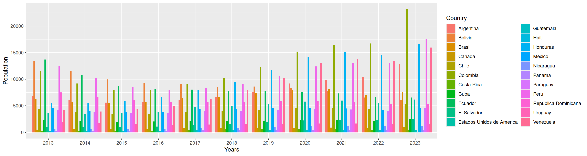
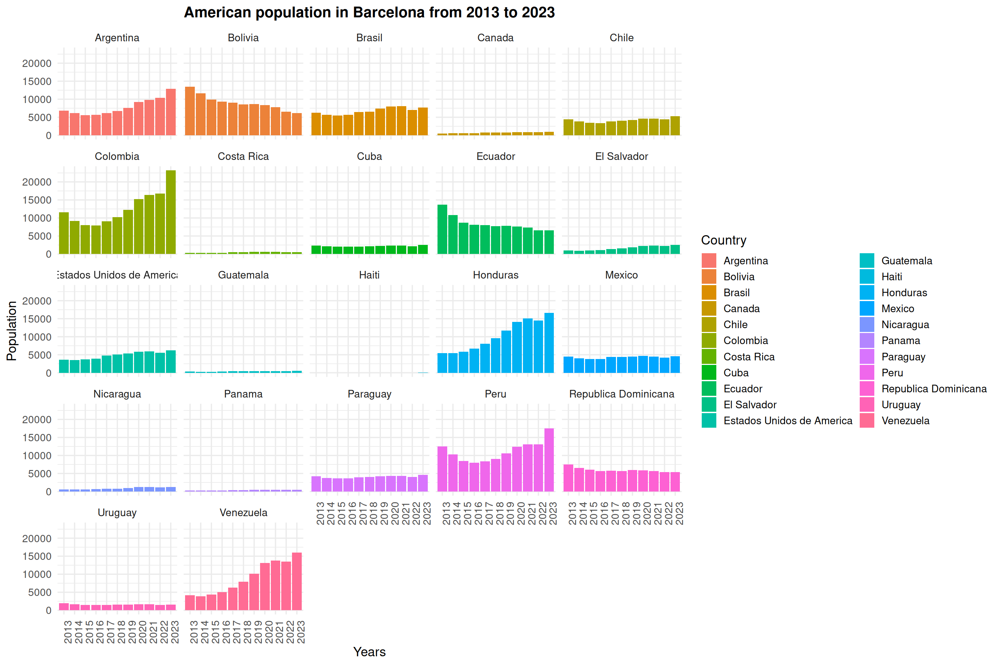

13.3 Exercise 7
Let’s do a small exercise to practice this conversion.
- Read in file DataViz_source_files-main/files/stats_countries_barcelona_2013-2023.csv
correction
2. Columns 2013 to 2022 contain observations. Convert this wide format into a long format. Save into a new object.
correction
# Option 1: list all columns
stats_countries_long <- pivot_longer(stats_countries,
cols=c("2013", "2014", "2015", "2016", "2017", "2018", "2019", "2020", "2021", "2022", "2023"),
values_to = "Population",
names_to = "Years")
# Option 2: select columns that start with "20"
stats_countries_long <- pivot_longer(stats_countries,
cols=starts_with("20"),
values_to = "Population",
names_to = "Years")
# Option 3: select all numeric columns
stats_countries_long <- pivot_longer(stats_countries,
cols=where(is.numeric),
values_to = "Population",
names_to = "Years")
3. Do the 3 following tasks linked by a %>% (pipe):
- Keep only rows that
- match “America” in column “Continent”
- have a population >= 50 (column “Population”)
- Remove column Continent.
- Produce a barplot with “Years” in the x-axis, Population in the y-axis, and split by Country.
correction
stats_countries_long_filtered <- filter(stats_countries_long, Continent=="America" & Population >= 50) %>%
select(-Continent)
ggplot(data=stats_countries_long_filtered, mapping=aes(x=Years, y=Population, fill=Country)) +
geom_bar(stat = "identity", position = "dodge")
- Customize your plot! Remember what we have done so far… You can, for example:
- Add a title (ggtitle())
- Change the overall theme (e.g. theme_bw(), theme_minimal()) and / or play with graphical parameters (see section on theme() function)
- Facet the graph (facet_wrap())
- … what else?…
One way out of hundreds of ways to show your data!
ggplot(data=stats_countries_long_filtered, mapping=aes(x=Years, y=Population, fill=Country)) +
geom_bar(stat = "identity", position = "dodge") +
theme_minimal(base_size = 14) +
ggtitle("American population in Barcelona from 2013 to 2023") +
theme(axis.text.x = element_text(angle=90), plot.title = element_text(size = 16, hjust = 0.5, face = "bold")) +
facet_wrap(~Country)
If you have tried to change the color scale, you may have noticed that none are large enough for this data (we need 22 colors). One way to tackle this problem is to combine color palettes (e.g. from RColorBrewer) prior to plotting.
# create a vector of 22 colors from RColorBrewer
my22colors <- c(brewer.pal(n=11, name="Paired"), brewer.pal(n=11, name="Set3"))
# feed the colors to "scale_fill_manual"
ggplot(data=stats_countries_long_filtered, mapping=aes(x=Years, y=Population, fill=Country)) +
geom_bar(stat = "identity", position = "dodge") +
theme_minimal(base_size = 14) +
scale_fill_manual(values=my22colors) +
ggtitle("American population in Barcelona from 2013 to 2023") +
theme(axis.text.x = element_text(angle=90), plot.title = element_text(size = 16, hjust = 0.5, face = "bold")) +
facet_wrap(~Country)